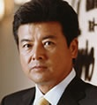

Tomokazu Miura is a Japanese actor. He married actress and singer Momoe Yamaguchi.
- Gender: Male
- Birthday: January 28, 1952
| |
Tomokazu Miura is a Japanese actor. He married actress and singer Momoe Yamaguchi.
|
 |
|---|
 |
Pod | The Secret World of Arrietty | Pod is Arrietty's father and the head of the home. He is quiet in nature and precise when he talks. He cares about his family and does all he can to protect his family. |